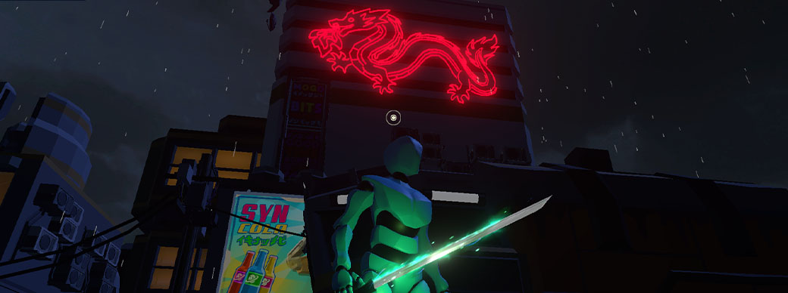

Who Am I ? & What Are My Projects ?
Over the years of my game development journey I have developed and create many small adn large projects. This page will show my most notable and relevant propjects that I created on my game development journey. This page wille xplain and showcase what things I have created both in my spare time and at university. Some of these projects are published and ready to play, others are not out yet.